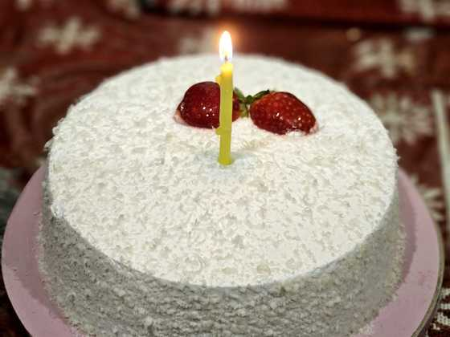
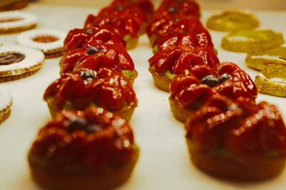
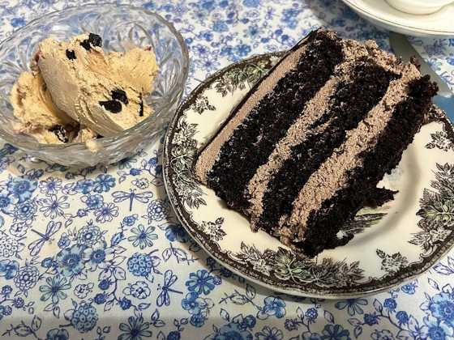
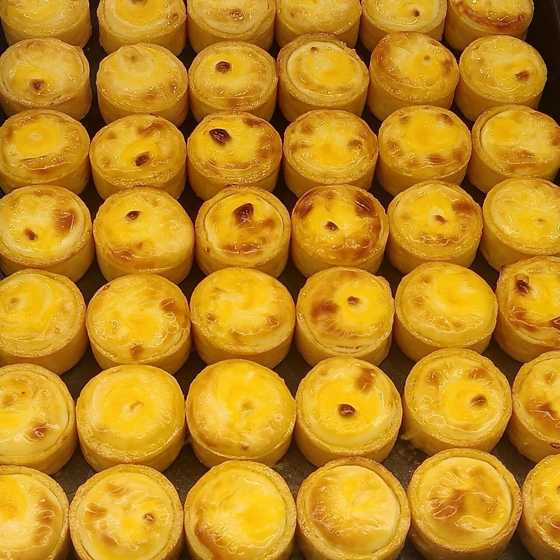
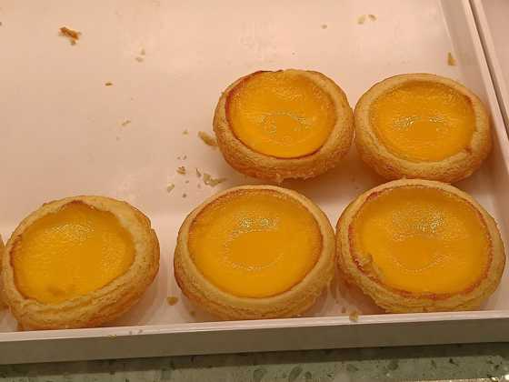
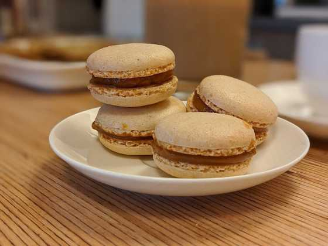

お店のこと
giorni(ジョルニ)=「日々」
giorniはイタリア語で「日々」を意味する言葉です。Instagramのアカウント名には「depuis 2017」(フランス語で「2017年から」)とあり、2017年ごろから続くお店のようです。2024年10月に現在のアカウントへ移っています。
お店の名前をつけた理由や、オーナーさんの想いは、公開されている情報からは確認できませんでした。そのため、このページのコンセプト「日々のひと切れ」は、屋号の意味と営業の様子から考えた制作側のイメージです。
お店は「菓子屋 giorni」と名乗り、主にカットケーキを販売。バースデーケーキはご予約で承っているようです。
確認できたこと
- 島根県益田市幸町4-73
- 水・木・金の13:00〜16:00(売り切れ次第早じまいの場合あり)
- カットケーキ(タルト、シフォン、チーズケーキなど)の販売
- バースデーケーキはご予約について案内あり
- 駐車場についての案内あり(詳細は準備中)
出典: お店のInstagram、食べログの掲載情報



お菓子
毎日の、ちいさなごほうび。
お店の実際の商品ではなく、イメージとして並べた写真です。










- カットケーキ
- タルト・シフォン・チーズケーキなど(日替わりの内容はInstagramで)
価格 準備中 - バースデーケーキ
- ご予約について案内あり(詳しい条件は準備中)
- 焼き菓子
- 準備中
口コミ
こんな声が届きそうです。
イメージ例
水曜の午後、仕事の合間に寄ってケーキをひとつ。三時のお楽しみになりました。
近くにお勤めの方(創作)イメージ例
家族の誕生日にお願いしました。ろうそくを立てたら、みんなの笑顔がそろいました。
ご家族でご利用の方(創作)イメージ例
売り切れる前にと思って早めに行きました。小さな店でも、選ぶ時間がうれしいです。
ご近所の方(創作)口コミはすべて制作側が作ったイメージ例で、実在のお客様の声ではありません。
アクセス
益田市幸町の菓子屋
| 所在地 | 〒698-0021 島根県益田市幸町4-73 |
|---|---|
| 電話 | 準備中 |
| 営業日 | 水・木・金 13:00〜16:00(Instagram掲載。売り切れ次第早じまいの場合あり) |
| 定休日 | 月・火・土・日(Instagram掲載の営業日以外) |
| 駐車場 | 準備中 |
| SNS | Instagram @giorni_depuis_2017 |